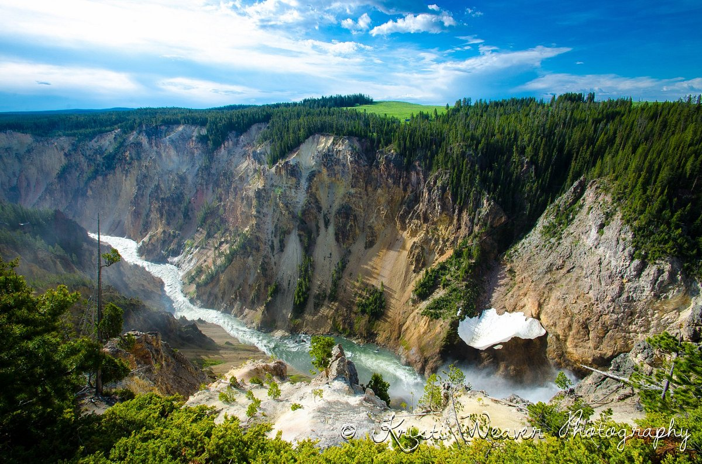
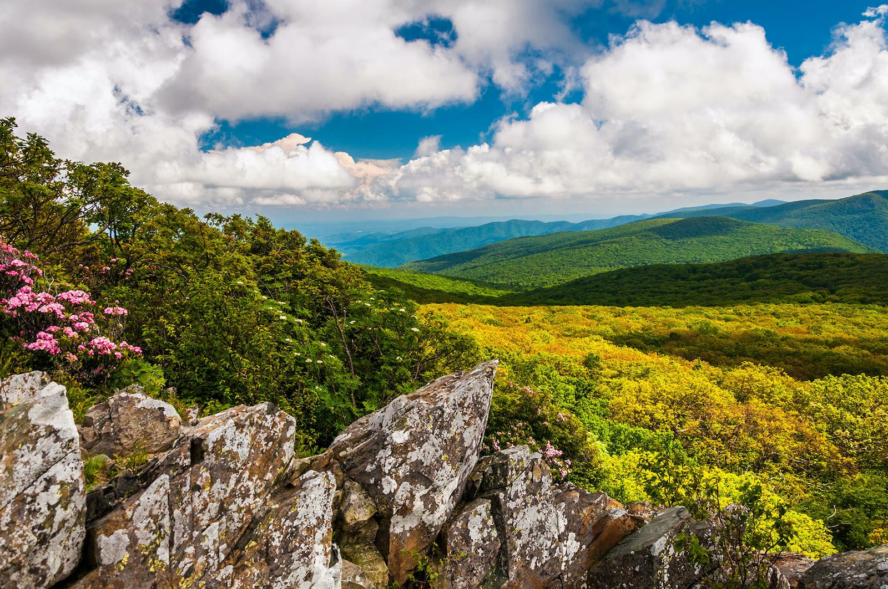

Bookmarks
@WebDev
@WebDev
Adam Bao
@adam_bao . Sep.27
Yellowstone is an American neo-Western drama television series created by Taylor Sheridan and John Linson that premiered on June 20, 2018, on Paramount Network. The series stars Kevin Costner, Luke Grimes, Wes Bentley, Kelly Reilly, Cole Hauser, and Gil Birmingham. Series episodes follow the conflicts along the shared borders of a large cattle ranch, an Indian reservation, and land developers. The fifth season is scheduled to premiere on November 13, 2022.

What is Yellowstone?
The series follows the Dutton family, owners of the largest ranch in Montana, the Yellowstone Dutton Ranch, commonly called "the Yellowstone". The plot revolves around family drama at the ranch and the bordering Broken Rock Indian Reservation, national park, and developers.
The series follows the Dutton family, owners of the largest ranch in Montana, the Yellowstone Dutton Ranch, commonly called "the Yellowstone". The plot revolves around family drama at the ranch and the bordering Broken Rock Indian Reservation, national park, and developers.

Adam Bao
@adam_bao . Sep.27
Shenandoah National Park preserves and protects nationally significant natural and cultural resources, scenic beauty, and congressionally designated wilderness within Virginia’s northern Blue Ridge Mountains, and provides a broad range of opportunities for public enjoyment, recreation, inspiration, and stewardship.

What is Shenandoah?
Shenandoah National Park lies along the Blue Ridge Mountains in north-central Virginia. These mountains form a distinct highland rising to elevations above 4,000 feet (1,200 m). Local topographic relief between the Blue Ridge Mountains and Shenandoah Valley exceeds 3,000 feet (910 m) at some locations. The crest of the range divides the Shenandoah River drainage basin, part of the Potomac River drainage, on the west side, from the James and Rappahannock River drainage basins on the east side.
Shenandoah National Park lies along the Blue Ridge Mountains in north-central Virginia. These mountains form a distinct highland rising to elevations above 4,000 feet (1,200 m). Local topographic relief between the Blue Ridge Mountains and Shenandoah Valley exceeds 3,000 feet (910 m) at some locations. The crest of the range divides the Shenandoah River drainage basin, part of the Potomac River drainage, on the west side, from the James and Rappahannock River drainage basins on the east side.